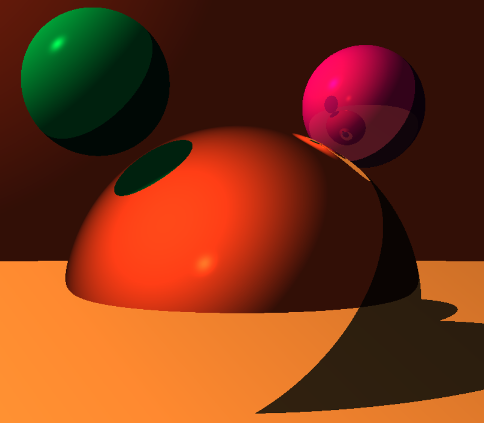

Real-time Ray-tracer with OpenGL
This ray tracer runs in real-time using OpenGL and the GLSL shading language to execute the code on the GPU. This is what allows the rendering to happen in real-time.
This WebGL project has the following characteristics:
- Rendering is performed using a recursive ray-tracer, bootstrapped on top of OpenGL as the rasterization/execution framework
- Renders a plane that represents the horizon
- Renders three spheres: One sphere is diffuse and specular, one is reflective, and one is 80% diffuse/specular and 20% reflective
- Renders a "sky" when no other object is intersected by the pixel ray by defining a large sphere to encompass the entire scene
- Uses shadow rays to determine if a point is illuminated
Notes about this project:
While this ray-tracer uses recursion to function, recursion is not supported by WebGL. To get around this, a GLSL stack is implemented to iteratively perform recursive functions.
